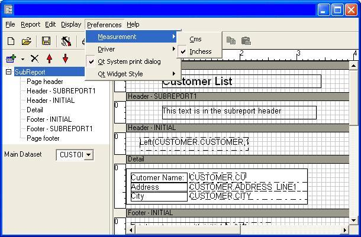
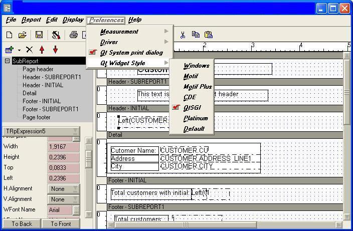
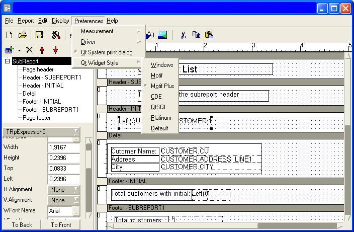

Designer preferences are not stored for each report, but for each machine or user where Report Manager Designer is installed.
You can switch between centimeters and inchess measurement units:

Note that the measurement properties of items and sections are expressed in the unit you select here.
In Microsoft Windows you can select to print using Qt/CLX library or GDI/VCL library (a report definition is platform and device independent).
Here is a table of differences between the drivers:
| Feature | Qt/CLX Driver | GDI Windows driver |
| Cross Platform | Yes | No |
| Fixed resolution to 100 dpi | Yes | No |
| Printer resolution | No | Yes |
| Can use device fonts | No | Yes |
| Knows exact printable area | No | Yes |
| Exactly positioning | Driver dependent | Yes |
| Pen patterns width variable pen widths (dash, dot...) | Yes | No |
| System metafile capable | No | Yes |
| Needs ghostcript in Linux | Yes | No |
Usually Windows GDI performs better drawing features and precision (with a good device driver), but it's not cross platform.
When you print/preview using GDI driver you are obtaining the same result as using TVCLReport Delphi/Builder component.
When you print/prevew using Qt driver you are obtaining the same result as using TCLXDriver.
Qt System print dialog
Selecting this option (default) the print dialog is the Qt system print dialog in Linux and Windows print dialog in Windows, if you disable this option a custom Report Manager engine is shown.
Qt Widget Style
Qt widget style is set initially to default, so in Microsoft Windows the widget appearance is the same as Windows 9x/NT/Millenium/2000 but in Linux the widget style is the default system widget style (usually windows).
You can select the widget style you like, it will be remembered by Report Manager Designer, here are two samples:

